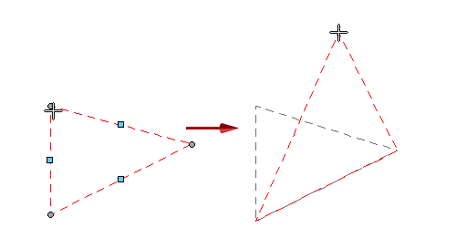
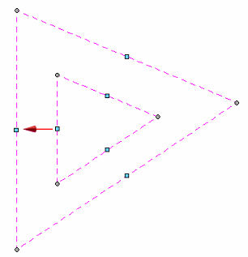
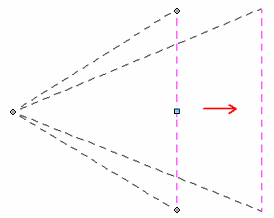

Modifying alignment shapes to rearrange annotations
You can select an alignment shape to modify it using the Annotation Alignment Shape command bar or by manipulating the geometry of the shape itself. Associated annotations respond to changes in the shape.
You can use the blue drag handle that appears on each segment of the shape to change the size of the shape. You can use the gray handles at the alignment shape vertices to change the configuration of the shape. The handles are visible when the annotation alignment shape is selected.
For example, you can:
-
Move the entire shape by dragging a segment of the shape.
-
Change the configuration of a multiline shape by dragging a vertex.

-
Grow the overall shape by dragging the blue handle in the middle of a segment.

Note:Use the Shift key to offset just the selected segment, so that it grows in one direction.

-
Add a vertex to a segment using Alt+click. You also can delete a vertex using Alt+click.
-
Shorten or lengthen a line by dragging its end points. A line also lengthens if necessary to accommodate annotations that are dragged along it.
-
Delete an alignment shape using the Delete key.
How do I
Align annotations using the Annotation Alignment Shape commandManage annotations that are associated with an alignment shape
Learn more
Arranging annotations using alignment shapesLook up more details
Annotation Alignment Shape commandShow/Hide Annotation Alignment Shape command
Annotation Alignment Shape command bar
Alignment Shape Properties dialog box
Alignment Shape Properties dialog box (General tab)
Alignment Shape Properties dialog box (Annotations tab)